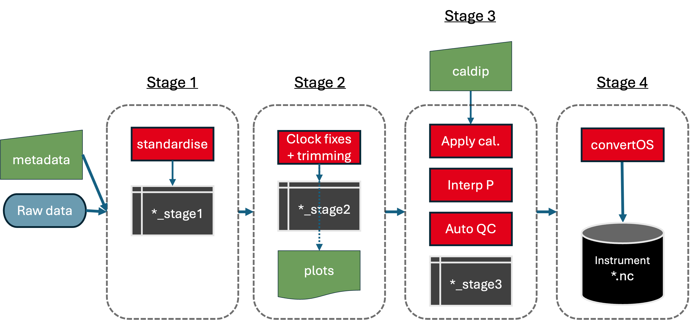
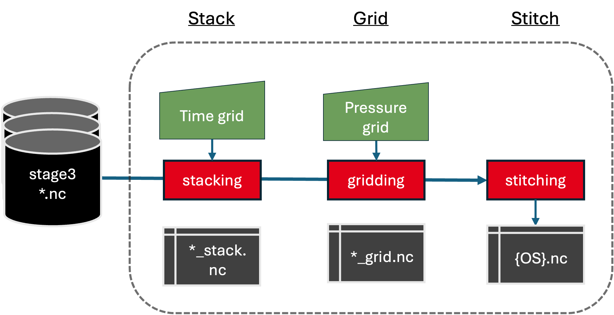
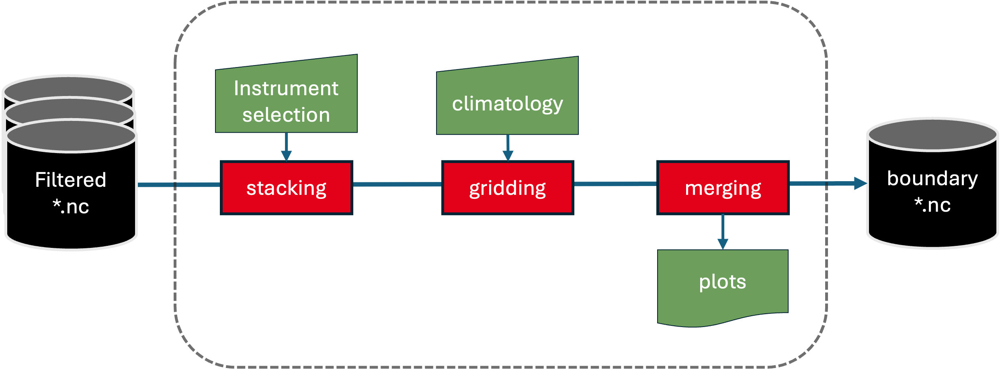

OceanArray processing framework
This document describes the stages of processing for data from moored instruments. Processing is separated into instrument-level (single instrument, single deployment), mooring-level (multiple instruments at the same location), and array-level (multiple moorings).
Principles:
Modular: Each stage has clearly defined inputs and outputs.
Cruise-ready: Designed for quick-look processing at sea, with enough structure to carry forward into scientific analysis.
Reproducible: Every transformation step is traceable, with logs, versioning, and metadata.
Incremental: Intermediate outputs are storable and reloadable for downstream processing.
Output files use CF-NetCDF conventions with OceanSITES-style metadata where possible. Full OceanSITES compliance is a work in progress.
Instrument-level processing

Instrument-level processing workflow.
The instrument-level processing carries out the following steps:
Stage 0: Download raw instrument files from the instrument (e.g.
.cnv,.asc,.rsk,.aqd). See YAML Configuration Reference for the full list of supported file types and instrument types.Stage 1: Convert raw files to CF-NetCDF (
_stage1.nc). Data are stored as-is — no trimming or QC. Unit normalisation at this stage: pressure standardised todbar; conductivity renamed where needed; temperature receives ascale = "ITS-90"attribute for SeaBird ASCII files.Stage 2: Trim the record to the deployment period and apply clock corrections (
_stage2.nc).Stage 3: Applied in this order:
Optional caldip calibration correction (planned, not yet implemented) — when the mooring is configured with caldip casts, per-instrument temperature/conductivity/pressure offsets from post-cruise caldip dips are applied to the raw values first, before pressure interpolation, so every downstream step sees corrected data. Omitted when no caldip input is given, leaving the output unchanged from today. See the note below.
Pressure interpolation for instruments without a native pressure sensor, using HAB and the pressure records of neighbouring instruments.
Conductivity unit check — converts S/m → mS/cm where needed.
Derivation of practical salinity via
gsw.SP_from_C(C, T, p).QARTOD gross-range and spike QC tests on temperature, conductivity, salinity, and pressure — applied after pressure interpolation so that interpolated pressures also receive QC flags.
XYZ→ENU coordinate rotation for Aquadopps, using heading, pitch, roll, and magnetic declination correction. (Stage 1 applies the prior BEAM→XYZ step using the instrument T matrix from the
.hdrfile.)Tilt QC for Aquadopps: velocity variables flagged suspect or bad when pitch/roll exceed configurable thresholds (default 20°/30°). For RDI ADCPs with four beams,
error_velocityis used for QC instead.
Output:
_stage3.nc. Applied QC thresholds are stored as attributes on each*_qcvariable so the exact configuration can be recovered from the file.Stage 4 (planned): Full export to OceanSITES format with rich metadata.
Note
Stage 2 applies two corrections. Clock offset corrects an instrument whose
clock was set to the wrong time at deployment — provide the computer and instrument
times at recovery and oceanarray applies a linear correction. Clock drift
is a slow accumulation of error that can happen to any instrument regardless of
how carefully the clock was set; it is corrected the same way. Both are optional —
if neither computer_clock_at_recovery nor instrument_clock_at_recovery are
set in the YAML, no clock correction is applied.
Note
The caldip calibration correction (Stage 3, step 1) is planned, not yet implemented.
When built it will be optional and will only apply corrections — the corrections
themselves are determined separately, from a calibration cast (pre- and post-deployment) or
from laboratory calibrations, using the caldip
package. With no caldip input the Stage 3 output is unchanged; there is a single
_stage3.nc, calibrated when caldip is configured.
Further details:
Data Acquisition (Download in proprietary formats) — downloading raw instrument files.
1. Standardisation (Internally-consistent format) — converting raw files to CF-NetCDF.
Trim to deployment period (Stage 2) — trimming and clock corrections.
Automatic QC flagging (Stage 3) — QARTOD QC flags.
Calibration — applying caldip corrections at the front of Stage 3 — applying calibration corrections.
4. Conversion to OS format — exporting to OceanSITES format.
Mooring-level processing

Mooring-level processing workflow.
After per-instrument processing (stages 0–3), multiple instruments on the same mooring are combined:
Stack (
process --stage stack): Resample all instruments onto a common time axis (default 60 s) and stack into a single NetCDF file with anN_LEVELSdimension ordered deep-first ({mooring}_stack.nc). Fast-sampling instruments (Δt ≤ 60 s) are subsampled by nearest-neighbour; slower instruments are linearly interpolated.Grid (
process --stage grid): Linearly interpolate the stacked file onto a regular pressure grid ({mooring}_grid.nc). Values outside the instrument range at each time step are set to NaN. QC flags are not consulted — data flagged suspect or bad in stage 3 are treated the same as good data unless already NaN.Concatenation (planned): Join multiple deployments at the same location into a continuous time series.
Note
The stack step may include optional low-pass filtering to remove tides before subsampling. This is controlled by YAML parameters; see YAML Configuration Reference.
RAPID Analogy
For RAPID, data are de-tided by a 2-day, 6th-order Butterworth low-pass filter and
subsampled to 12-hour intervals. Vertical gridding uses monthly climatological T/S
profiles built from CTD and Argo data. Concatenation in time is a simple
interp1.m call onto a uniform 12-hourly axis.
Further details:
Stack: Common Time Axis — low-pass filtering and common time axis.
Grid: Vertical Pressure Grid — pressure-grid interpolation.
Concatenate Deployments — joining multiple deployments.
Array-level processing

Array-level processing workflow.
For boundary profiles, this step starts from the mooring-level gridded files, stacks and sorts them vertically at each time step across multiple moorings, and re-interpolates onto a common pressure grid. This reduces data gaps and ensures smooth transitions across deployments.
RAPID Analogy
For RAPID, sites WB2, WBH2, and WB3 are merged: WB2 data from 0–3800 dbar, then WBH2 and WB3 for deeper levels. The final output is a merged “West” boundary profile ready for transport calculations.
Further details:
Multi-site Merging — merging multiple mooring sites into a single boundary profile.
Summary table
Step |
Name |
Description |
|---|---|---|
0 |
Acquisition |
Download raw instrument files |
1 |
Standardisation |
Convert raw files to CF-NetCDF; faithfully preserve raw values |
2 |
Trimming & clock corrections |
Restrict to deployment period; apply clock offset/drift corrections |
3 |
QC & rotation |
Pressure interpolation; QARTOD QC flags; salinity; velocity rotation (optional caldip T/C/P correction at the front — planned) |
4 |
OceanSITES export (planned) |
Full export to OceanSITES format with rich metadata |
A |
Stack |
Resample all instruments onto a common time axis; stack with depth dimension |
B |
Grid |
Interpolate onto a regular pressure grid |
C |
Concatenation (planned) |
Join deployments into continuous mooring records |
D |
Boundary merging |
Merge multiple moorings into a single boundary profile |